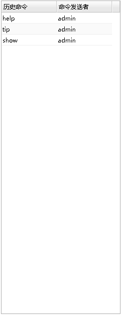

从数据库监控面板中的集群分组的操作下拉菜单中点击集群监视器,弹出监视器ini信息,数据守护和读写分离集群的监视器的ini为dmmonitor.ini(dmdsc集群的监视器ini为dmcssm.ini),如下图所示：
该ini由系统根据收集的信息自动生成，但有可能因为信息收集不全，导致ini生成失败或有误，这时需要用户自己手动编辑。(建议每次打开监视器时确认ini是否准确)
确认监视器ini信息后，点击确定,可以打开集群监视器面板，该页面用于维护和管理集群。 数据守护和读写分离集群的监视器功能同数据守护监视器(dmmonitor),dmdsc集群的监视器功能同DMCSSM监视器,界面显示如下图所示：
集群管理询面板主要由以下几个部分组成。
消息回显面板面板主要用于显示执行的命令和命令执行的结果信息，如下图所示:
命令输入面板主要用于输入命令，如下图所示:
功能列表
| 操作 | 说明 |
|---|---|
|
下载监视器日志。打开监视器日志文件对话框选择监视器日志文件下载 |
| 查看命令等待队列。打开命令队列对话框查看监视器命令队列信息 | |
| 查看监视器ini内容。打开监视器ini对话框查看监视器ini(dmcssm.ini/dmmonitor.ini)信息 |
具体包含的命令以及命令的使用方式与DM数据守护监视器命令一致，使用时可以输入help查看，数据守护和读写分离集群的监视器详细信息可以查看DM7数据守护相关手册，dmdsc集群的监视器详细信息可以查看DM7共享存储集群相关手册。
历史命令面板主要用于现在最近执行的10条命令，如下图所示:
